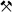

Abraumförderbrücke F60
Useful Information
| Location: |
Bergheider Str. 4, 03238 Lichterfeld-Schacksdorf-Lichterfeld.
(51.587301, 13.778575) |
| Open: |
16-MAR to OCT Di-So 10-18. NOV to 15-MAR Mi-So 11:30, 13, 14:30. [2026] |
| Fee: |
Adults EUR 16, Children (6-15) EUR 7,50, Children (0-5) frei, Students EUR 15. Groups (30+): Adults EUR 13. [2026] |
| Classification: |
 Lignite Mine Open Cast Mining |
| Light: | n/a |
| Dimension: | |
| Guided tours: | D=90 min. |
| Photography: | allowed |
| Accessibility: | no |
| Bibliography: | |
| Address: | Abraumförderbrücke F60, Bergheider Str. 4, 03238 Lichterfeld-Schacksdorf-Lichterfeld, Tel: +49-3531-60800. |
| As far as we know this information was accurate when it was published (see years in brackets), but may have changed since then. Please check rates and details directly with the companies in question if you need more recent info. |
|
History
| 1989 | F60 built on site by VEB TAKRAF Lauchhammer (now TAKRAF GmbH Lauchhammer). |
| MAR-1991 | completed. |
| JUN-1992 | decommissioned. |
| 2002 | opened as a show mine. |
Geology
The lignite was deposited in depressions in the form of bogs, where peat accumulated and, due to the absence of air, did not decompose. Subsequently, the situation changed and further on loose sediments were deposited on top of the peat. In particular, during the ice ages, moraines were deposited time and again. Over time, the peat was transformed into lignite. The overlying layers are still unconsolidated or only slightly consolidated.
Description
Abraumförderbrücke F60 (F60 Overburden Conveyor Bridge) is not a show mine in the traditional sense, it is, in fact, an engineering monument. So the official name F60 Visitor Mine is not entirely accurate. It relates to the Lusatian lignite opencast mining industry, and this structure was used to transport away the overburden lying above the coal seam. This made the lignite accessible and allowed it to be extracted by mining machinery. There are also examples of such mining machinery that are open to the public, however, to our knowledge, this is the only overburden conveyor bridge in the world that visitors can walk across. Furthermore, it is the largest mobile industrial machine in the world. That is why it is, of course, also a key site on the European Route of Industrial Heritage. Incidentally, the designation ‘F60’ refers to the fact that it was originally capable of removing a layer up to 60 metres thick.
The machine is 502 m long, 204 m wide and 80 m high, and weighs 11,000 t. That is just the conveyor bridge, in addition, there is the excavator that transported the rock onto the bridge’s conveyor belt. The F60 has two undercarriage assemblies – put simply, railway undercarriages – which ran on three parallel standard-gauge tracks on the excavator side and on two tracks on the spoil side. Two further tracks were also required: one for the transformer and cable wagon, and one for the connected bucket chain excavators. In total, the bridge runs on 760 bogie wheels, 380 of which are driven. In other words, the bridge could only be moved sideways. Furthermore, the tracks had to be laid first.
But now to how it works. To extract the coal, the overlying layer must first be removed. The excavators transport the overburden up onto the overburden conveyor bridge, where the material is transported across the opencast mine and backfilled on the other side in the area that has already been mined. In other words, the opencast mine is constantly advancing.
Five F60 overburden conveyor bridges were built in the Lusatian lignite mining area. In 2024, the one at the Jänschwalde opencast mine was taken out of service after 47 years of operation and was finally demolished in 2026. The first three are at the Welzow-Süd, Nochten and Reichwalde opencast mines. They are still in operation, but may be closed in a few years due to carbon dioxide laws. The conveyor bridge here is the most recently built, and it was only in operation for just over a year because the Klettwitz-Nord opencast mine was closed down for energy policy reasons.
 Search DuckDuckGo for "Abraumförderbrücke F60"
Search DuckDuckGo for "Abraumförderbrücke F60" Google Earth Placemark
Google Earth Placemark OpenStreetMap
OpenStreetMap Besucherbergwerk F60, official Website (visited: 03-OCT-2026)
Besucherbergwerk F60, official Website (visited: 03-OCT-2026) Index
Index Topics
Topics Hierarchical
Hierarchical Countries
Countries Maps
Maps